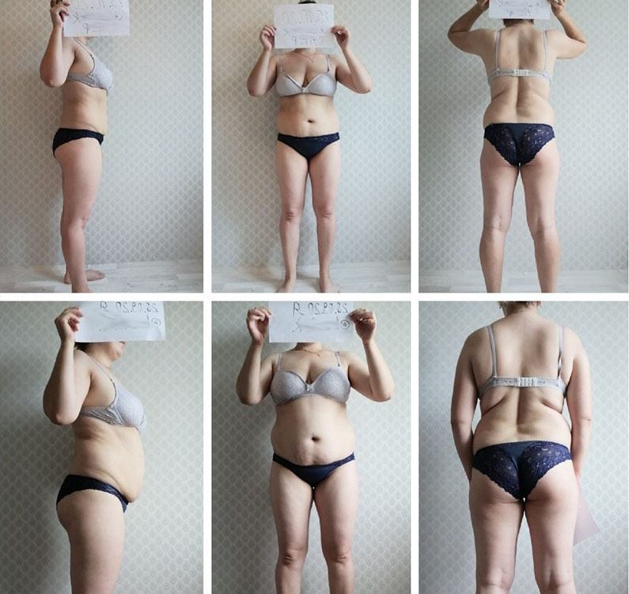
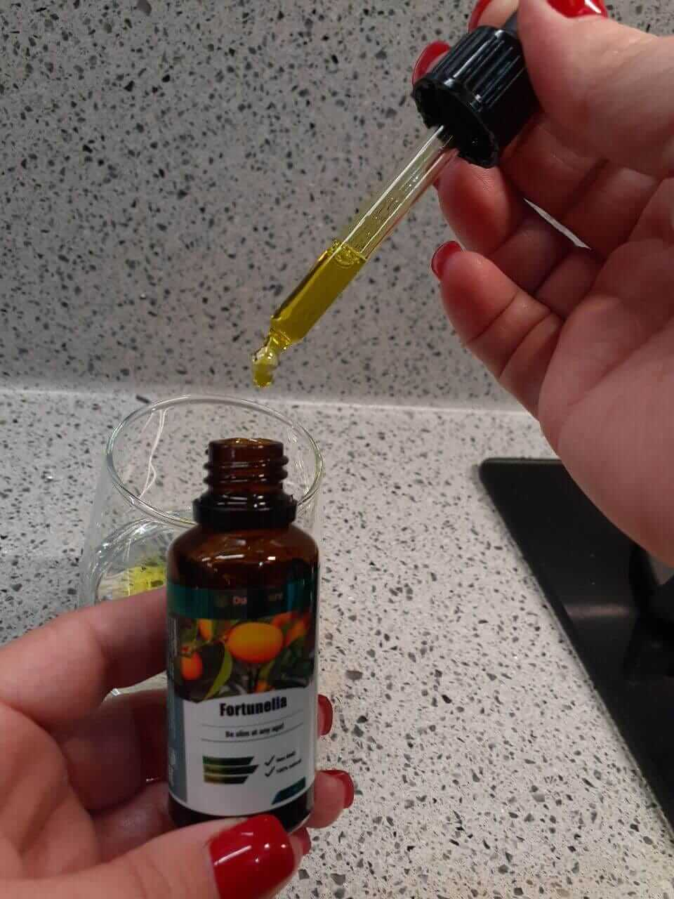

Tutti online stanno discutendo del nuovo prodotto per la perdita di peso a base di Barberine che ha eclissato Ozempic
Le persone condividono foto di come hanno perso 10-14 chilogrammi in un mese

Non molto tempo fa, il mondo è stato sorpreso dal farmaco Ozempic, con l'aiuto del quale Ilon Musk, il conduttore Jimmy Kimmel, Madonna, Lady Gaga, l'attrice Christina Hendricks, Julia Fox e la modella Ashley Graham hanno perso peso. Hanno sorpreso con i loro risultati, ma hanno scelto di tacere sugli effetti collaterali del potente farmaco. Hanno perso peso a scapito della propria salute.
Fortunatamente, è ora disponibile un nuovo prodotto Fortunella a base di Barberine, un bruciagrassi naturale estratto dal frutto del crespino. Ti aiuta a perdere peso rapidamente e sopprime l'appetito senza alcun danno alla tua salute.
Ed ecco solo alcuni dei risultati condivisi dagli utenti sui loro social network:
Abbiamo invitato il Prof. Giorgio Calabrese per un'intervista in cui ha confrontato Fortunella sulla base di Barberine e Ozempic.
Il Prof. Giorgio Calabrese è un nutrizionista di fama mondiale, capo del Dipartimento di Nutriciologia e un medico attivo con 32 anni di esperienza.
Quale rimedio ti aiuter a perdere peso. Risposta da Dr. Prof. Giorgio Calabrese
Presentatore: Molte persone confrontano Fortunella a base di berberina con Ozempic. Perché le persone dovrebbero provare un nuovo prodotto quando c'è un Ozempic collaudato?
Prof. Giorgio Calabrese: Ozempic è destinato al trattamento del diabete di tipo 2, non alla perdita di peso. Sì, puoi perdere peso con esso, ma devi sopportare una serie di effetti collaterali: nausea, disidratazione, malessere e rischio di pancreatite. È un farmaco potente che dovrebbe essere assunto solo sotto la supervisione di un medico.
Presentatore: Fortunella non ha tali effetti collaterali?
Prof. Giorgio Calabrese: Il componente principale di Fortunella è la Barberina. È contenuto nel frutto del crespino, quindi è un ingrediente completamente naturale. A differenza di Ozempic, non ha questi effetti collaterali. È un utile integratore per la perdita di peso.
Composizione di Fortunella:
-
La berberina normalizza i livelli di colesterolo e zucchero nel sangue, ha un effetto benefico sul microbiota intestinale, riduce il gonfiore e riequilibra il contesto ormonale. Ciò rende la berberina un integratore ideale per la disintossicazione, la perdita di peso e la riduzione della vita.
-
L'ananas contiene la bromelina, un "enzima dimagrante", un catalizzatore per la scomposizione dei grassi. Migliora la digestione aumentando l'acidit del succo gastrico. Alla fine, allo stesso tempo migliora la condizione della pelle, attenuando le rughe e facendo scomparire la cellulite.
-
Il caffè verde contiene un potente acido clorogenico antiossidante. L'acido blocca la degradazione del glicogeno e quindi costringe il corpo a ottenere energia dai grassi. La caffeina aiuta anche a bruciare i grassi e rende la pelle compatta e tesa.
-
La guaran accelera l'idrolisi e il metabolismo dei grassi. L'estratto di guaran migliora l'afflusso di sangue al cervello, in modo che le persone magre rimangano vigili e attive.
*Nel 2023 sono stati condotti studi clinici presso l’Universit di medicina a Roma in Italia. La berberina ha superato tutti gli studi clinici necessari, ha dimostrato un'elevata efficacia nella lotta contro l'eccesso di peso NCT05463003 ed è approvata dall'Associazione dietetica italiana. L'Istituto di Dietetica ha qualificato WeightBerry come sicuro con una composizione organica naturale al 100% e adatto a tutte le fasce d'et senza effetti collaterali. WeightBerry ha ricevuto tutte le certificazioni necessarie. Nel 2024 è stato effettuato un secondo studio indipendente presso la Clinica “Medicina e benessere” di Milano, che ha confermato pienamente i risultati precedenti.
Presentatore: Come funziona?
Prof. Giorgio Calabrese: È possibile perdere peso solo con un deficit calorico: non si può mangiare molto cibo spazzatura e perdere peso. Fortunella a base di Barberina agisce in due direzioni contemporaneamente: aumenta il tasso metabolico nel corpo e sopprime l'appetito. In questo modo spenderai molte più calorie durante il giorno senza avere fame.
Presentatore: Quanto è realistico perdere peso con questo integratore?
Prof. Giorgio Calabrese: Si possono perdere 3-4 chilogrammi a settimana senza alcun danno, e anche con benefici per l'organismo.
Presentatore: Perché allora molte star hanno preso l'Ozempic?
Prof. Giorgio Calabrese: L'Ozempic è diventato popolare, ma è dannoso per la salute. Le star hanno preso il farmaco sotto la supervisione di un medico, perché hanno i soldi per farlo. Gli scienziati sono stati a lungo alla ricerca di un analogo simile nella composizione e nell'effetto, che non avr effetti collaterali. Da questo punto di vista, Fortunella è migliore di Ozempic.
Presentatore: Le persone su Internet confrontano attivamente Ozempic e Fortunella. E lodano entrambi i prodotti: quindi quale scegliere?
Prof. Giorgio Calabrese: Se non hai il diabete di tipo 2 e il tuo medico ti prescriver Ozempic, dovresti assolutamente scegliere Fortunella. Questo integratore a base di Barberina è adatto per l'uso domestico ed è molto più economico. Credetemi, l'Ozempic sar presto tolto dal mercato perché non ha più senso.
OZEMPIC
- Prezzo: 177,71 €
- Efficacia: 8 su 10
- Effetti collaterali: Nausea, disidratazione, gastroparesi, pancreatite, tumore della tiroide, perdita tono ed elasticit della pelle, specialmente del viso (Ozempic Face)
Fortunella

- Prezzo:
78 €39 € - Efficacia: 10 su 10
- Effetti collaterali: Nessuno
Presentatore: Mi dica brevemente : perché le persone dovrebbero fidarsi della sua opinione?
Prof. Giorgio Calabrese: Sono in medicina da 32 anni e non ho mai visto nulla di simile prima d'ora. E questa non è solo la mia opinione, ma anche l'opinione di altri specialisti. Ti svelo un segreto, molte star di Hollywood sono gi passate a Fortunella su consiglio dei loro nutrizionisti.
Presentatore: C'è un'opinione secondo cui perdere peso così velocemente può essere dannoso per la salute. È sicuro assumere questo prodotto?
Prof. Giorgio Calabrese: Questo integratore contiene solo ingredienti naturali: Barberina, Guaran, Ananas, Caffè verde. Un insieme così salutare non può nuocere nemmeno in teoria.
Presentatore: Ci sono ulteriori raccomandazioni per l'uso?
Prof. Giorgio Calabrese: Sì, al fine di massimizzare l'effetto, il mese migliore per iniziare a prendere Fortunella è il . Durante questo periodo, si osserva la migliore reazione del corpo all'uso di questo integratore. Ma la durata del corso viene calcolata individualmente. Un consulente può aiutarti in questo quando effettui un ordine o un farmacista in una farmacia.
Presentatore: L'integratore è in vendita in farmacia?
Prof. Giorgio Calabrese: All'inizio lo era. Ma c'è stato un rincaro così grande che il produttore ha ritirato il prodotto da tutte le catene di farmacie e ora vende direttamente il prodotto. Questo è più economico e d la garanzia che otterrai l'originale.
Come funziona
Il nostro corpo tende ad immagazzinare grasso, perché per esso è una riserva strategica. Pertanto, il corpo rallenta il suo tasso metabolico per convertire il maggior numero possibile di calorie in depositi di grasso. Ma in realt, chiunque può spendere tre volte più calorie, anche senza esercizio fisico.
La Barberina in Fortunella aumenta il metabolismo del 307%, costringendo il tuo corpo a consumare le sue riserve di grasso. In questo modo, avrai più energia, sarai sveglio al mattino e dimenticherai la fatica.
Pensateci: cosa facciamo quando prendiamo il raffreddore? Assumiamo vitamina C. E quando non abbiamo energia, beviamo caffeina. Quindi aiutiamo il corpo a sbarazzarsi del problema. Fortunella ha micronutrienti e super antiossidanti che aiutano il corpo a sbarazzarsi dell'eccesso, vale a dire il grasso. Con l'assunzione di questo prodotto, il corpo si rende conto di non aver più bisogno di riserve strategiche perché il suo metabolismo è gi più alto del solito.
È clinicamente testato che la barberina aumenta la combustione dei grassi di 10 volte!
Propriet principali di Fortunella
- Bruciare i grassi. Perderai fino a 500 grammi di grasso sottocutaneo e viscerale per ogni giorno di assunzione.
- Soppressione dell'appetito. Gi il terzo giorno, l'integratore inizia a smorzare la sensazione di fame.
- Effetto tonico. Sarai energizzato bruciando i grassi, non dagli stimolanti esterni.
- Purificazione del sangue. La barberina è usata per disintossicare il corpo e abbassare i livelli di colesterolo nel sangue.
- Normalizzazione dei livelli di zucchero. Il prodotto è adatto anche ai diabetici.
ATTENZIONE: Fortunella sopprime fortemente l'appetito, ma non dimenticare i pasti principali.

Il risultato degli studi clinici del prodotto
Su richiesta dell'Associazione Internazionale di Dietetica e Scienze Nutrizionali, sono stati condotti numerosi studi clinici sull'integratore Fortunella. Lo studio ha coinvolto 126 intervistati che erano molto in sovrappeso. Il risultato ha scioccato l'intera comunit medica:
In media, i partecipanti hanno perso 17 chilogrammi di peso in 30 giorni di assunzione dell'integratore;
Il 96% degli intervistati ha riportato un miglioramento significativo della propria salute;
125 soggetti su 126 avevano normalizzato i livelli di zucchero nel sangue;
Nessun partecipante ha manifestato effetti collaterali.
Il tasso metabolico dei soggetti è triplicato durante l'integrazione.
Il peso è rimasto normale nel 100% dei partecipanti anche un anno dopo la fine del corso.
Fortunella non è più venduto in farmacia
A causa della grande popolarit e attenzione tra le star dello spettacolo, molte contraffazioni sono apparse nelle catene di farmacie. Pertanto, il produttore è stato costretto a ritirare il prodotto dalle catene di farmacie.
Fortunella può essere ordinato solo direttamente dal produttore, compilando il modulo ufficiale sottostante. E fino al compreso, qualsiasi residente in Italia può vincere uno sconto sul primo ordine:
Ordinate e ottenete:
- Supporto specialistico del Contact Center
- Istruzioni per l'uso
- Prodotto certificato e approvato dal ministero della salute
- CONSEGNA ENTRO 3-5 GIORNI
- PAGAMENTO AL RICEVIMENTO DELLA MERCE
In data il numero di pezzi a prezzo scontato è di: 23 pezzi
Partecipa alla promozione e ricevi lo sconto sull'acquisto di Fortunella fino al 50%!
INDOVINA LA PORTA DIETRO LA QUALE C'E' LO SCONTO DEL 50%
Sì, è possibile pagare alla consegna.
Il pacco verr consegnato tramite corriere dal lunedì al venerdì (compreso).
Angela Bengamini
Ho perso peso in soli 50 giorni! È un miracolo ❤️😍

Ho provato a perdere peso per oltre 10 anni, ma solo ora ci sono riuscita! Fortunella non solo ha bruciato i grassi nel mio corpo, ma ha anche fermato completamente il mio aumento di peso!
Come ‧ Risposta ‧ 2
‧
2
‧
Alessandro Guzzo
Il pacco è arrivato in 2 giorni. Vivo in provincia, quindi i pacchi possono richiedere mesi ma Fortunella mi è stato consegnato in 2 giorni! Si vede che il produttore apprezza i propri clienti e si prende cura di loro, a differenza delle farmacie e dello Stato.

Come ‧ Risposta ‧ 4
‧
4
‧
Maria Bartolini
Ho comprato il rimedio quando erano rimaste solo 29 confezioni. Questo rimedio miracoloso sta scomparendo a velocit cosmica. affrettati, presto la tua ultima possibilit di perdere peso velocemente e facilmente ti verr tolta!
Come ‧ Risposta ‧ 10
‧
10
‧
Nunzia Sevilla
Ero anormalmente grassa, 120 kg....non riuscivo nemmeno a stare in piedi. Uscivo qualce volta al mese: mi facevano molto male le articolazioni, mi facevano male le ossa…. E ora sono MOLTO grata per questo rimedio miracoloso! Solo nel primo mese ho perso 20 kg! Mi sentivo molto meglio, è diventato molto più facile respirare. Dopo il secondo mese avevo gi perso 18 kg e i medici dissero che sarei sicuramente sopravvissuta, che l'eccesso di peso non mi avrebbe ucciso. grazie a Dio, grazie!!!!!

Come ‧ Risposta ‧ 16
‧
16
‧
Maria Feragni
Avevo dimenticato cos'è una palestra, con quale disgusto ricordo tutte queste palestre, pesi, una maglietta eternamente sudata e una doccia sgradevole! Non andrò mai più in palestra, MAI più! Perché ne ho bisogno se con Fortunella ho perso 4 kg in una settimana?!
Come ‧ Risposta ‧ 15
‧
15
‧
Maria Lombardi
Ho perso 10 kg in un mese! Guarda i miei risultati! Sono estremamente felice di aver acquistato il vostro prodotto! Peccato che la mafia delle farmacie presto sterminer Fortunella dal mercato.... Questo è terribile....

Come ‧ Risposta ‧ 18
‧
18
‧
Virginia De Rosa
Articolo interessante e ottimo prodotto. Tuttavia, non è chiaro come funzioni.
Come ‧ Risposta ‧ 22
‧
22
‧
Marina Vigliotti
L’obiettivo è accelerare il metabolismo. Ciò significa che sfrutti appieno i carboidrati senza immagazzinarli, poi ne consumi molto meno (semplicemente non ne hai voglia, preferisci carne e acqua) e il corpo inizia a trarre energia dai vecchi depositi di grasso, ignorando il grasso della pancia, dei fianchi e organi interni. Fortunella è un ottimo rimedio contro il grasso viscerale: mi ha aiutato molto!
Come ‧ Risposta ‧ 27
‧
27
‧
Pasquale Berlusco
Non ci sono state complicazioni. Ogni volta che ho preso Fortunella, ho migliorato sia fisicamente che mentalmente. Questo rimedio non solo mi fa dimagrire e mi aiuta a perdere peso, ma mi guarisce anche. Questo è un vero MIRACOLO. È un peccato che questo rimedio non sar mai più disponibile nelle farmacie... Poveri italiani...

Come ‧ Risposta ‧ 29
‧
29
‧
Marina Rossi
Va tutto bene, ma non capisco perché non sia disponibile nelle farmacie.
Come ‧ Risposta ‧ 27
‧
27
‧
Lucia Pellegrini
Sembra che tu non abbia letto attentamente l'articolo! Le farmacie hanno una loro storia problematica. Non è nel loro interesse vendere Fortunella. Preferiscono vendere pillole per la pressione, per lo stomaco, ecc. a 3.000 euro, tutte conseguenze dell'obesit.... Penso che dopo una storia del genere Fortunella sar disponibile in farmacia, ma ad un prezzo elevato.
Come ‧ Risposta ‧ 31
‧
31
‧
Maria Balzarani
Per tutta la vita sono andata dai medici e ho ricevuto solo commenti del tipo "Beh, neanche noi siamo onnipotenti". E solo un medico mi capì davvero e volle aiutarmi: era Giorgio Calabrese. Ora sarò curata solo da lui, poiché consiglia rimedi di altissima qualit non solo per la perdita di peso, ma anche per la cura del corpo in generale.

Come ‧ Risposta ‧ 34
‧
34
‧
Sofia Sandoro
Ooh! Fortunella è mio. Mi piace così tanto. Per molto tempo non sono riuscito a trovarlo da nessuna parte, finché un medico non mi ha dato un link per ordinarlo e l'ho perso :( Quindi grazie per l'interessante intervista e l'opportunit di ordinarlo. L'ho gi ordinato :)
Come ‧ Risposta ‧ 37
‧
37
‧
Sofia Barbieri
Ciao, ho iniziato a prendere Fortunella e ho perso solo 8 kg in un mese 😔😔😔😔

Come ‧ Risposta ‧ 41
‧
41
‧
Aurora Coffi
Ho iniziato a prendere queste gocce, ho mangiato tutto quello che volevo e ho perso 9 kg. Penso che Fortunella sia la cosa migliore che ho provato per perdere peso, e la cosa migliore è che non hai bisogno di andare in palestra se non hai tempo o voglia. questa soluzione è perfetta per chi come me! Lo consiglio!
Come ‧ Risposta ‧ 40
‧
40
‧
Alessandro Mazzo
Prima di iniziare con Fortunella, pesavo 106 kg. Sono sempre stato magro, ma invecchiando ho iniziato ad ingrassare nell'addome e nei fianchi. All'et di 25 anni, mi sono reso conto che avevo urgentemente bisogno di rimettermi in forma. Mi sono dedicato all'attivit fisica per quasi un anno, ma non sono mai riuscito a tornare alla mia forma normale. Per caso ho scoperto Fortunella e in poche settimane sono diventato la persona che avevo sempre desiderato vedere allo specchio. Oggi mantengo la mia figura e Fortunella è ancora sul mio scaffale.

Come ‧ Risposta ‧ 44
‧
44
‧
Giula Benedetta
Anche Fortunella ha funzionato bene per me. Adesso mangio quello che voglio e me ne vanto ;) 18 kg in un mese e mezzo. Continuate così!

Come ‧ Risposta ‧ 41
‧
41
‧
Sara Feragni
Hai mai provato a smettere di mangiare? Da bambino è comprensibile: te lo danno e tu lo mangi. Ma ora, da adulto, non puoi controllarti e smettere di mangiare?
Come ‧ Risposta ‧ 49
‧
49
‧
Paola Bigliotti
Sara, sì, mangio pochissimo, ma questo non aiuta. Il peso si è stabilizzato e non diminuisce.
Come ‧ Risposta ‧ 52
‧
52
‧
Giovanna Rizzi
Sono rimasta sorpresa quando hai scritto che solo i nutrizionisti e gli endocrinologi conoscono Fortunella. Uso le gocce regolarmente da due anni. Ho perso 14 kg quando ho iniziato a prenderlo, e adesso lo uso solo per la prevenzione e per le vitamine, è un concentrato naturale di erbe. Anche i miei amici lo sanno da molto tempo, quindi non è solo il tuo segreto :). FOTO PRIMA E DOPO

Come ‧ Risposta ‧ 53
‧
53
‧
Maria De Rossi
Perché tutti devono essere misurati con lo stesso metro? Perché tutti devono essere magri? Io ad esempio peso 79 kg con 167 cm e non mi vergogno. adoro il mio aspetto e mi sento benissimo!
Come ‧ Risposta ‧ 50
‧
50
‧
Vincenzo Marchetti
Anche mia moglie non riesce a perdere peso. Quando ci siamo sposati pesava 53 kg, ora pesa 68 kg. La cosa peggiore è che non le d fastidio. Hai ragione, al peso ci si abitua e sembra che sia sempre stato lì.
Come ‧ Risposta ‧ 64
‧
64
‧
Angelo Riverardi
Vivo a Milano da quando sono nato. A causa del mio lavoro tendo al sovrappeso e una volta, tanto tempo fa che non credo più che sia vero, pesavo quasi 140 chili. Ho ordinato "Fortunella" per perdere peso e ora peso ben 71 kg. Il risultato: meno 69 kg in 4,5 mesi! Il peso è rimasto basso! Sono orgoglioso di potervi mostrare le mie foto: il risultato della mia lotta contro il sovrappeso. Non credevo nemmeno di poter cambiare così tanto alla mia et, ma si è scoperto che perdere peso è reale a qualsiasi et! Grazie ! E il pacco del sito ufficiale è arrivato molto velocemente a Milano. E anche se c'è uno sconto, devo preordinarlo urgentemente, così ho risparmiato..
Come ‧ Risposta ‧ 67
‧
67
‧
Alice Baggi
Ragazzi, ho ordinato Fortunella, è roba fantastica! Lo prendo da 2 mesi e mezzo ormai, ho gi perso 40 kg tanto per cominciare!!!!! La mia pelle non si è allungata affatto. Il grasso scompare proprio dove serve. Sono molto soddisfatta di questo prodotto. L'ho consigliato a tutti i miei amici e li ha aiutati tutti.

Come ‧ Risposta ‧ 62
‧
62
‧
Maria De Rosa
Come sempre, la trasmissione è perfetta. sempre ottimi consigli! Sono passate due settimane da quando ho finito il mio corso dimagrante con questo gocce, ho perso 57 kg di peso extra! Ti sono molto grata! Mi è davvero piaciuto dimagrire di notte! Li ho comprati io stessa sei mesi fa e gi dai primi giorni ho notato l'effetto
Come ‧ Risposta ‧ 68
‧
68
‧
Veronica Pizze
Sono totalmente d'accordo. Ottimo prodotto dimagrante! E se solo sapessi quanto è emozionante svegliarsi la mattina, guardare la bilancia e vedere che sei più leggera di 10-15 kg.

Come ‧ Risposta ‧ 74
‧
74
‧
Giorgia Pettini
Ho perso 65 kg grazie a Fortunella, è un ottimo prodotto!
Come ‧ Risposta ‧ 77
‧
77
‧
Clara Conte
Voglio ringraziare gli sviluppatori del progetto! Ho perso 30 kg e hai salvato il mio matrimonio, mio marito mi presta più attenzione e tutto sta andando alla grande in termini, sai, di intimit! Ho preso le gocce così come c'era scritto sulla confezione: 10-20 gocce al mattino e alla sera
Come ‧ Risposta ‧ 75
‧
75
‧
Gaia Mancini
Ho ricevuto il pacco ieri, il corriere me lo consegna letteralmente in pochi giorni! Grazie per l'articolo e il modulo d'ordine, almeno non devo cercarlo!
Come ‧ Risposta ‧ 82
‧
82
‧
Anna Rossetti
Grazie ale gocce e ai corsi di fitness si ottengono ottimi risultati. Non conto più le calorie, riduco solo il numero dei pasti e mangio 4-5 volte al giorno. Non ho smesso di mangiare prodotti a base di farina, li ho solo ridotti al minimo. Adesso mangio quello che mi pare, ma entro limiti ragionevoli.

Come ‧ Risposta ‧ 80
‧
80
‧
Aurora Cara
Ho perso 51 kg in 4 mesi, senza fare diete o morire di fame, ho mangiato di tutto, tutto grazie a "Fortunella"!

Come ‧ Risposta ‧ 89
‧
89
‧
Antonella Montana
Buongiorno a tutti, anch'io sono dimagrita con queste gocce. Me li ha portati mia sorella un anno fa.... Sarò sincera con voi: non avrei mai nemmeno sognata un risultato del genere! Pensavo fosse stupido e non volevo iniziare, ma mia sorella mi ha convinto a provarlo. Ho iniziato ad usarlo, di conseguenza, presto sono dovuta correre in un negozio per cambiare il mio guardaroba, i miei pantaloni hanno iniziato a cadere )))))))) Ho perso 58 kg in 4 mesi!!!!!! ora il peso si è stabilizzato e non cambia!!! Dire che sono felice non è niente!!!!! :)))) Consiglio a tutti di provarlo!!!! Almeno 2 settimane, vedrai il risultato! Ragazze, non ascoltate nessuno che non funzioner per voi o che non potete. Potrei! E puoi farlo ancora di più! Tutti consigliano "Fortunella", solo lui e ha aiutato. E prendilo solo attraverso la via ufficiale.
Come ‧ Risposta ‧ 93
‧
93
‧
Enrica Visconti
Ho avuto difficolt ad addormentarmi quando ero a dieta. E non ho dormito bene, mi svegliavo continuamente, tremando. Su consiglio di un amico, ho comprato "Fortunella" e ora il mio corpo è molto rilassato durante la dieta, a quanto pare il metabolismo è accelerato e il corpo si adatta rapidamente e inizia il naturale processo di perdita di peso.
Come ‧ Risposta ‧ 94
‧
94
‧
Imma Tolla
Con queste gocce dormo benissimo anche mentre sono a dieta e mi addormento facilmente. Trovo che sia perché non voglio mangiare, non ho appetito). Ho perso 25 kg in un mese e mezzo.

Come ‧ Risposta ‧ 98
‧
98
‧
Claudia Parella
Ho perso da 80 a 60 kg in 2 mesi, tutto grazie a queste gocce.
Come ‧ Risposta ‧ 104
‧
104
‧
Laura Palma
Ho ordinato 2 confezioni dle gocce! Per me e per un amico. Il metodo è fantastico, sono riuscita a perdere quasi 16 kg in un solo mese. EVVIVA, questa è la mia vittoria personale!!! Sono orgogliosa di me stessa!!!! E ancora, riguardo alle domande precedenti, le gocce sono SICURI!!!! Sono allergica a diverse sostanze. Non ho avuto alcuna reazione.
Come ‧ Risposta ‧ 114
‧
114
‧
Maria Noeli
Ho gi ricevuto il pacco con il Fortunella! Dopo aver iniziato a prenderli, ho davvero perso peso. Stranamente, non è caduto nulla, i miei muscoli sono tonici e la mia pelle non ha smagliature. È come se avessi fatto una liposuzione. Ho raggiunto questo risultato in un mese e mezzo: meno 20 chili. Non ho fatto alcuna dieta vera e propria, ho mangiato quello che volevo.
Come ‧ Risposta ‧ 125
‧
125
‧